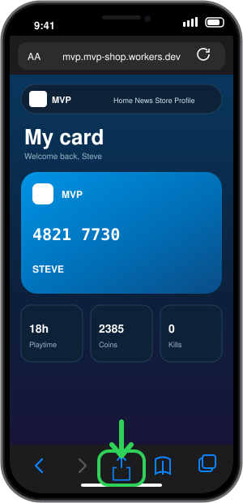
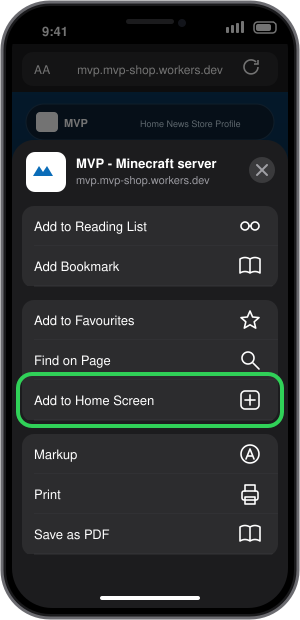
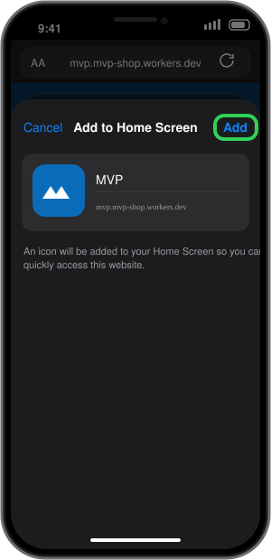
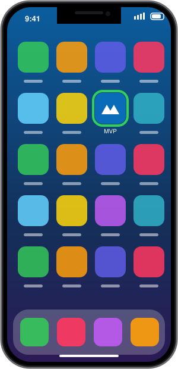

Add MVP to your Home Screen
On iPhone and iPad the site works like an app and can send you news notifications. It takes about 20 seconds.
1
Open the site in Safari
Go to the MVP site in Safari and tap the Share button at the bottom of the screen.

2
Tap Add to Home Screen
Scroll the menu down a little and tap Add to Home Screen.

3
Tap Add
Keep the name MVP and tap Add in the top right corner.

4
Open MVP from your Home Screen
Use the new MVP icon. Then go to Profile and tap Turn on to get notifications.

Notifications on iPhone need iOS 16.4 or newer and only work when MVP is opened from the Home Screen icon. The pictures are drawings that show where to tap. Your screen may look slightly different.